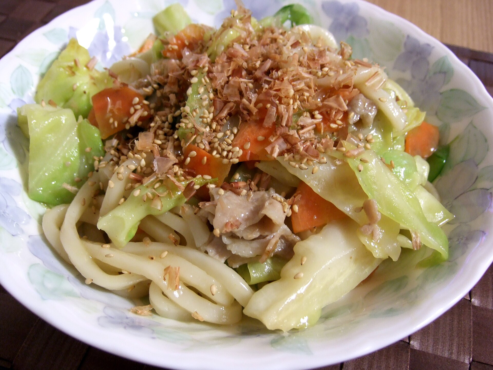

Yaki Udon

Description: Yaki Udon is a classic Japanese stir-fry dish with chewy udon noodles, vegetables, and soy sauce.
Based on multiple recipes but specifically the NYT one
For the sauce:
- 3 heaping tables oyster sauce
- 2 tablespoons soy sauce
- 1 tablespoon mirin, note you can sub with some sugar
- 1 teaspoon brown sugar
- 1 tablespoon sake, you can sub with sherry or 1 teaspoon of rice wine vinegar
- a pinch of freshly ground black or white pepper
For the rest:
- Toasted sesame oil, for the noodles
- Sesame seeds for ganish
- 1 package of noodles, pref frozen (approx 4 cups)
- Bundle of green onions sliced, keep dark green part until the end
- 1 yellow onion, thinly sliced
- 2 cups cabbage roughly chopped
- 1 cup of mushrooms sliced
- 1 carrot jullienned
- 1 tablespoon sake, you can sub with sherry or even rice vinegar
- a pinch of freshly ground black or white pepper
- 1 cup/8 ounces of thinly sliced meat
Steps
- Whisk together sauce ingredients
- Boil udon noodles to instructions, set aside, and toss with 1 tablespoon of toasted sesame oil
- Heat the wok/pan to medium high, add 1 tablespoon of oil and cook meat until browned. Set meat aside
- Add 1 more tablespoon of oil, add onions and cook until softened, then add the other vegetables and cook for 2 min.
- Add meat and noodles to pan, pour the sauce and toss/cook for 2-3 more minutes. Add green onions now if you want them slightly cooked.
- Garnish and serve with sesame seeds
Home